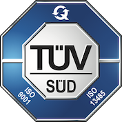

Contact us
HQs are in via Gabriele Camozzi, 144 - 24121 Bergamo - Italy
+39 035.0170561 +39 035.0273786
Company certification
OROBIX is ISO 9001:2008 certified since 2010 and ISO 13485:2003/2012 (Medical devices) certified since 2015.
We strongly believe that a daily commitment in monitoring and improving the quality of our processes has a direct effect on our reliability towards our customers.

certificate numbers:
ISO 9001:2008: 50 100 9730,
ISO 13485:2012: Q1N 15 07 9247 001,
ISO 13485:2003 CMDR: Q1N 15 07 9247 002